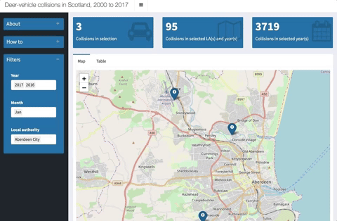

.jpg){kind=link}
shiny::runGitHub(
repo = "scot-deer-collisions",
username = "matt-dray"
).jpg)
tl;dr
I made a Shiny app with open data about deerstrikes by cars in Scotland.
Open data
Deer roam Scotland. So do humans. It’s a problem when they meet at high speed.
The National Deer-Vehicle Collisions Project, administered by The Deer Initiative, has been monitoring data on deer-vehicle collisions in the UK.
The data are open. I found the data set when skimming through data.gov.uk (a classic weekend activity for all the family). It links to the SNH Natural Spaces site where you can download the data as shapefile, GML or KML under the Open Government Licence.
I couldn’t find an interactive visualisation of these data and I want to spend more time working with the {shiny} package,1 so why not.
A simple Shiny app
Here’s a preview of the app in action:

Along with {shiny}, the app was built primarily with the R packages:
- {shinydashboard} for a nice layout and value boxes
- {leaflet} for the interactive map
- {DT} for the interactive datatable
The interface is a simple dashboard in three parts: a sidebar, a main panel and three value boxes.
The sidebar contains three collapsible sections with an ‘about’ section, a ‘how to’ section and a section with interactive filters. You can type or select collisions from a specified time (year and/or month) and place (the local authority in which it happened).
The main panel has two tabs. One is an interactive map that indicates the collisions with clickable markers. The second tab contains an interactive table. The data shown in these views is a result of the filters that have been applied via the sidebar. The interactive table also allows for further data filtering and you can download the results.
The value boxes each show one statistic related to the filtered data: the number of collisions; total collisions for the given local authorities and years; and the total collisions in the selected years. These update as you change your selections.
Run the app
The code for the app is available on GitHub. You can also download the cleaned data in CSV or RDS format.
You can run the app from an R session by installing {shiny} from CRAN and then executing the following lines:
Limitations
I used to host the app for free on shinyapps.io, but it’s since made way for other projects. That means you’ll have to download it to run it. The code will continue to exist on GitHub though, where you can leave an issue or fork it to make it better.
In terms of app design, I limited the filters to year, month and local authority. I could have included deer species and road, but the data are sparse and the formatting wasn’t great. I cleaned these variables up a bit and they’re available as filterable columns in the interactive table.
There’s also a large number of data points and it doesn’t make sense to show them all at once because it slows the app down. There are methods for improving this, but I assume most people will be looking at specific local authorities or roads rather than the country as a whole.
Environment
Session info
Last rendered: 2023-08-04 08:43:46 BSTR version 4.3.1 (2023-06-16)
Platform: aarch64-apple-darwin20 (64-bit)
Running under: macOS Ventura 13.2.1
Matrix products: default
BLAS: /Library/Frameworks/R.framework/Versions/4.3-arm64/Resources/lib/libRblas.0.dylib
LAPACK: /Library/Frameworks/R.framework/Versions/4.3-arm64/Resources/lib/libRlapack.dylib; LAPACK version 3.11.0
locale:
[1] en_US.UTF-8/en_US.UTF-8/en_US.UTF-8/C/en_US.UTF-8/en_US.UTF-8
time zone: Europe/London
tzcode source: internal
attached base packages:
[1] stats graphics grDevices utils datasets methods base
loaded via a namespace (and not attached):
[1] htmlwidgets_1.6.2 compiler_4.3.1 fastmap_1.1.1 cli_3.6.1
[5] tools_4.3.1 htmltools_0.5.5 rstudioapi_0.15.0 yaml_2.3.7
[9] rmarkdown_2.23 knitr_1.43.1 jsonlite_1.8.7 xfun_0.39
[13] digest_0.6.33 rlang_1.1.1 evaluate_0.21 Reuse
CC BY-NC-SA 4.0